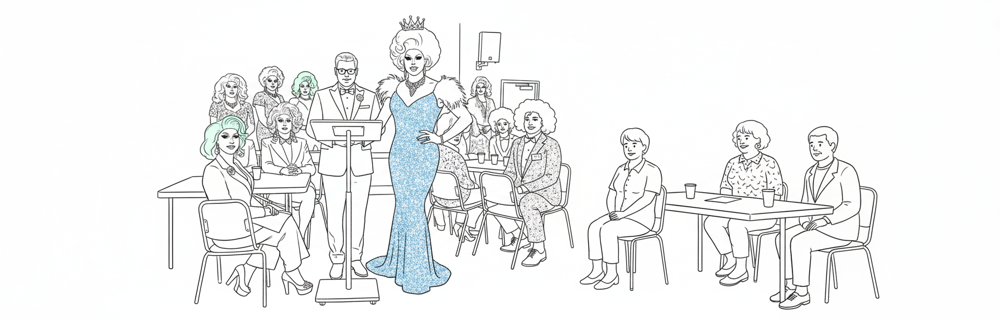

Bem‑vinda minha linda ao Centro Comunitário Harbor Light — o palco da nossa comunidade onde todo mundo brilha.
Sobre Nós
Amore, há mais de 30 anos o Harbor Light é nosso cantinho de afeto, aprendizado e babado. Aqui a gente se encontra, compartilha talento e faz história — tudo com muito glitter no coração.

Nossos Serviços
Oficinas poderosas, ligas pra suar a maquiagem, programas de bem‑estar e aulas de arte pra você liberar o artista que há em si — tudo pensado pra levantar espíritos e unir gente boa.
Participe dos Nossos Eventos
O Harbor Light é puro evento — roda de amigos, feira de talentos e festa bonita o ano todo. Vem pro nosso festival de verão: vai ter música, comidinhas e calor humano pra valer.
Festival Anual de Verão:
Início: 20 de julho de 2050